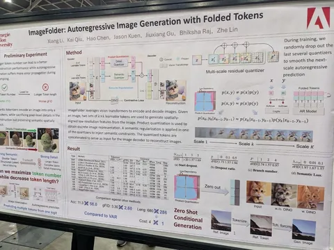
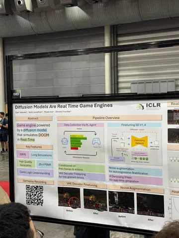
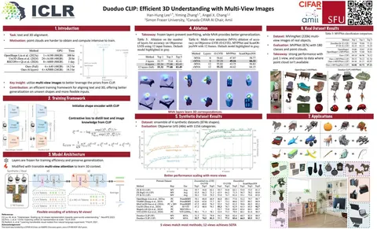
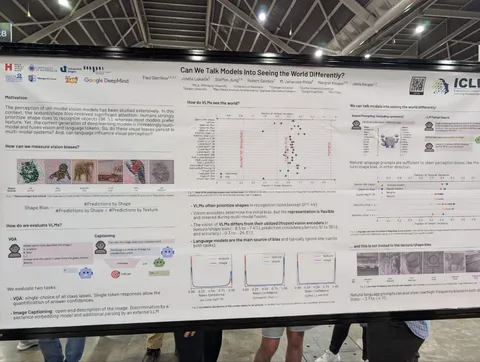
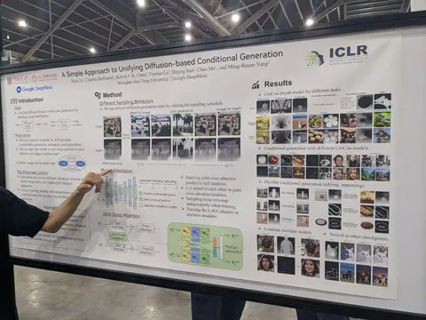
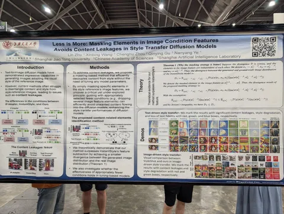
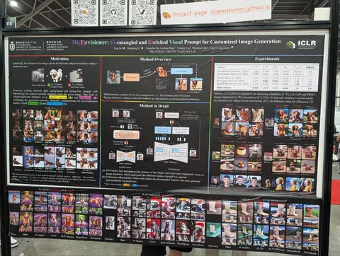

ICLR пока не думает заканчиваться — посему несём вам новую (большую) порцию избранных работ. Во многих случаях нашим инженерам удалось поговорить с авторами, поэтому идеи буквально из первых рук.
Can We Talk Models Into Seeing the World Differently
Любопытная работа, изучающая робастность VLM к текстурным bias'ам: получается лучше, чем при обучении на Imagenet, но пока хуже, чем у людей. Непонятно, дело в данных, в другом методе обучения или в том, что большинство картиночных энкодеров — CLIP-like.
A Simple Approach to Unifying Diffusion-based Conditional Generation
Параллельно учат две диффузионки, связанные кросс-аттеншнами: одну — для картинок, другую — для карты глубины. Таймстемпы семплируются независимо. На инференсе можно генерировать любую из модальностей, независимо или одновременно. Модель без дообучения обобщается на большее число веток, позволяя выполнять редактирование изображений.
Less is More: Masking Elements in Image Condition Features Avoids Content Leakages in Style Transfer Diffusion Models
DisEnvisioner: Disentangled and Enriched Visual Prompt for Customized Image Generation
Пара работ по улучшению стилизации и персонализации. Идеи довольно похожие: в первой — в пространстве CLIP'a понимают, какие картиночные фичи соответствуют концепту, и маскируют их. Во второй — учат адаптер с двумя токенами (релевантные и нерелевантные эмбеды) — выкидывая вторые на инференсе.
Diffusion Models Are Real Time Game Engines
Doom запустили на диффузионках. Демо впечатляет тем, что модель запоминает локации. Кажется, что это большой прогресс.
Duoduo CLIP: Efficient 3D Understanding with Multi-View Images
Незатейливо вставляют и дообучают в CLIP multi-view attention слои, чтобы получить multi-view-модель. Её эмбеддинги можно использовать взаимозаменяемо с CLIP-эмбедами в поиске по базам данных с ростом качества.
Работы отобрали и прокомментировали
CV Time
#YaICLR
